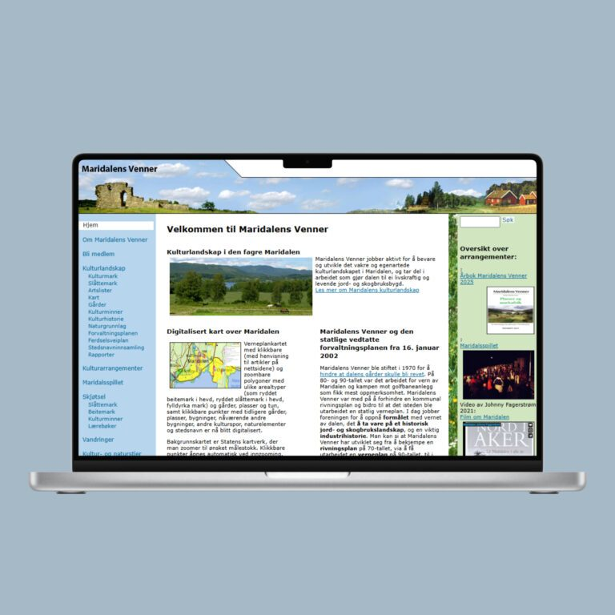
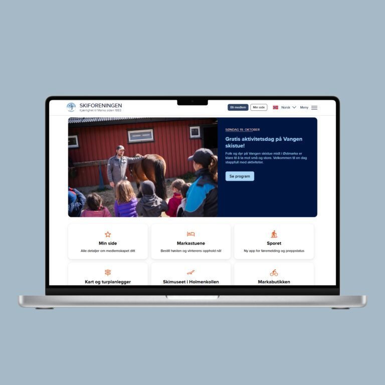

Designsystem
Farger, typografi, avstand og komponenter fra skissene, slik at de kan importeres som stiler og komponenter i Figma.
Farger
Navngitte token fra :root i site.css, og øvrige farger som faktisk er i bruk. Sidebakgrunnen er hvit. Den varme tonen brukes bare inne i paneler og på objektflater.
Typografi
Overskrifter settes i Newsreader 500. Brødtekst, menyer og knapper settes i Plus Jakarta Sans. Prøvene bruker de ekte klassene. Der mobilstørrelsen er en annen, står den etter skråstrek.
Ordmerke
Newsreader 500 · 34–54 px / 28 px mobil · linjehøyde 0,95 · bokstavmellomrom 0,035 em · versaler · farge --red
Slagord under logo
Plus Jakarta Sans 600 · 11,5 px / 9,5 px mobil · bokstavmellomrom 0,16 em / 0,10 em mobil · versaler · farge --muted
Overskrift 1 · Underside
Bøkene om Oslomarka
.intro h1 · Newsreader 500 · 40–60 px / 40 px mobil · linjehøyde 1,02 · bokstavmellomrom −0,015 em. Samme stil på .about-hero h1.
Overskrift 1 · Artikkel
Korpås-Olsen: Eneboer og preparant i Østmarka
.art-head h1 · Newsreader 500 · 38–62 px · linjehøyde 1,03 · bokstavmellomrom −0,015 em
Overskrift 1 · Objektside
På gamle veier og nye stier i Oslomarka
.item__body h1 · Newsreader 500 · 34–48 px · linjehøyde 1,06 · bokstavmellomrom −0,012 em
Overskrift 1 · Hero
På vandring i Oslomarka i 1951
.hero h1 · Newsreader 500 · 28–38 px / 31 px mobil · linjehøyde 1,10 · bokstavmellomrom −0,012 em
Overskrift 2
Flere bøker fra samme forfatter
.section-h h2 · Newsreader 500 · 28 px / 24 px mobil · linjehøyde 1,10. .prose h2 er 30 px / 26 px mobil. .about h2 er 34 px. .year h2 er 30 px.
Overskrift 3 · Korttittel
På gamle veier og nye stier i Oslomarka
.obj__t · Newsreader 500 · 19 px / 16,5 px mobil · linjehøyde 1,22. Artikkelkort .acard .headline er 23 px /
1,18. Rad med tre .row--3 .headline er 25 px / 1,16. Rad
med fire .row--4 .headline er 21 px / 18 px mobil.
Tittel i megameny
Foreninger og lag.mm-main__t · Newsreader 500 · 22–27 px / 24 px mobil · linjehøyde 1,15
Ingress
Olaf Olsen (1874–1952) gikk under navnet Korpås-Olsen og hadde sin anonyme tilværelse ikke mange hundre meter fra der mengder av hovedstadens turfolk nå legger sin søndagstur.
.art-head .dek · Plus Jakarta Sans 400 · 20 px / 18 px mobil · linjehøyde 1,55 · farge #3D423E. .intro p er 17 px / 16 px mobil. .hero__dek er 16 px / 15,5 px mobil.
Brødtekst
Heikampen samler bøker, kart,
markaminner og historier fra Oslomarka. Teksten settes i Plus Jakarta Sans, med jevn linjelengde og god linjeavstand slik at
lengre artikler er behagelige å lese.
.prose · Plus Jakarta Sans 400 · 18 px / 17 px mobil · linjehøyde 1,72 · farge #202421. Vanlig brødtekst på
siden er 16 px / linjehøyde 1,55 · farge --ink.
Liten tekst / metadata
.meta · Plus Jakarta Sans 400 · 13 px · farge --muted. .obj__m er 13,5 px / 12,5 px mobil. .hero__credit og bildetekst er 12–13 px.
Etikett / kicker
Markahistorie.label · Plus Jakarta Sans 700 · 11,5 px / 10,5 px i trange rader · bokstavmellomrom 0,14 em · versaler · farge --green. .panel__title og .mm-label er 11–12 px, 700, bokstavmellomrom 0,16 em.
Menylenker
.nav a · Plus Jakarta Sans 600 · 13 px · bokstavmellomrom 0,12 em · versaler. Skjules under 900 px. .menu-btn er samme typografi, 12 px på mobil.
Knappetekst
.btn · Plus Jakarta Sans 600 · 14 px · linjehøyde 1 · bokstavmellomrom 0,02 em · farge hvit på --green. .f-reset er 13 px 600 i --green-dark.
Avstand og grid
Skalaen er hentet fra de verdiene som faktisk brukes i site.css. Beholderen er 1320 piksler bred, med fleksibel ramme og mellomrom.
Avstandsskala
Rutenett, tre kolonner
.grid.grid--3 · brukes i bøker, kart og markaminner
Rutenett, fire kolonner
.grid.grid--4 · blir tre kolonner under 1100 px og to under 820 px
Komponenter
Markup og klasser er kopiert fra skissene. Interaktive flater som megameny og mobilfilter vises statisk i åpen tilstand, uten at man trenger å klikke.
Komponent / Toppmeny
Komponent / Megameny

Komponent / Bunntekst
Komponent / Knapper
Komponent / Lenker
Vanlige lenker arver tekstfarge og har ingen understrek. I byline og faktaruter markeres lenken med en linje under. «Vis alle» og hover på titler bruker mørk grønn.
Komponent / Brødsmuler
Komponent / Artikkelkort

Korpås-Olsen: Eneboer og preparant i Østmarka
Olaf Olsen (1874-1952) gikk under navnet Korpås-Olsen og hadde sin anonyme tilværelse ikke mange hundre meter fra der mengder av hovedstadens turfolk nå…Olaf Olsen (1874-1952) gikk under navnet Korpås-Olsen og hadde sin anonyme tilværelse ikke mange hundre meter fra der mengder av…

Mix-klubben
For hundre år siden ble det sagt at det var lettere
å vinne OL-gull på ski, enn å vinne klubbmesterskapet i Mix-klubben.

Nordmarkas eneste klosterhage
Allemannsretten er mer enn felleseie. Ofte er den et ensomt forhold mellom enkeltmennesker og små naturperler.
Komponent / Fremhevet artikkel

Ernst Bjerknes – ingeniøren som tegnet verdens første skikart
Ernst Bjerknes var en allsidig og viljesterk mann som satte spor etter seg på mange områder. Gjennom et langt liv satte han spor i Nordmarka, Kristiania og en rekke andre steder i Norge.
Komponent / Bokkort

Komponent / Kartkort


Komponent / Markaminnekort


Komponent / Organisasjonskort

Maridalens Venner
Etablert 1970Maridalens Venner ble stiftet i 1970 for å hindre at dalens gårder skulle bli revet. På 1980- og 90-tallet var det arbeidet for vern av Maridalen og kampen mot golfbaneanlegg som fikk mest oppmerksomhet.Maridalens Venner ble stiftet i 1970 for å hindre at dalens gårder skulle bli…

Skiforeningen
Etablert 1883Skiforeningen (Foreningen til Ski-Idrettens Fremme) ble stiftet i 1883, og er en av Norges eldste friluftsorganisasjoner. Skiforeningen arbeider for å fremme skiidrett og friluftsliv, særlig i Oslomarka.Skiforeningen (Foreningen til Ski-Idrettens Fremme) ble stiftet i 1883,…
Komponent / Kategorifaner
Komponent / Søk og filter
Venstre kolonne slik den vises på desktop. De to første gruppene er åpne, de øvrige lukket. Ett valg er huket av, så avkrysning med antall vises.

Komponent / Søk og filter, mobil
Panelet som glir inn fra venstre under 900 px, vist åpent og i dokumentflyt. Fotlinjen med «Vis N bøker» og «Nullstill» er synlig.
Komponent / Vis flere
Skissene har ikke sidetall. Arkivsidene bruker denne fotlinjen i stedet for paginering.
Komponent / Mest lest
Komponent / Handlingsfelt
Komponent / Skjemafelt
Skissene har ikke et kontaktskjema. Feltene under er søk, sortering og avkrysning slik de brukes i meny og filter.